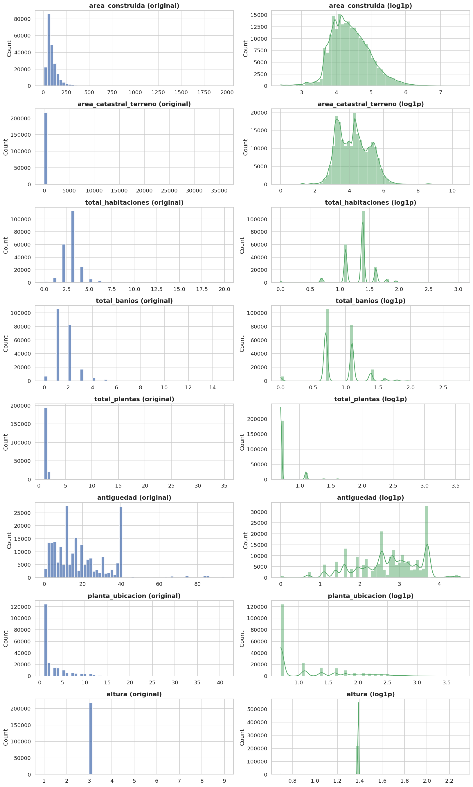
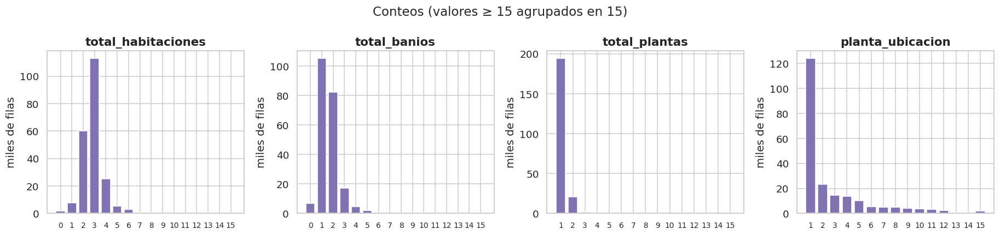
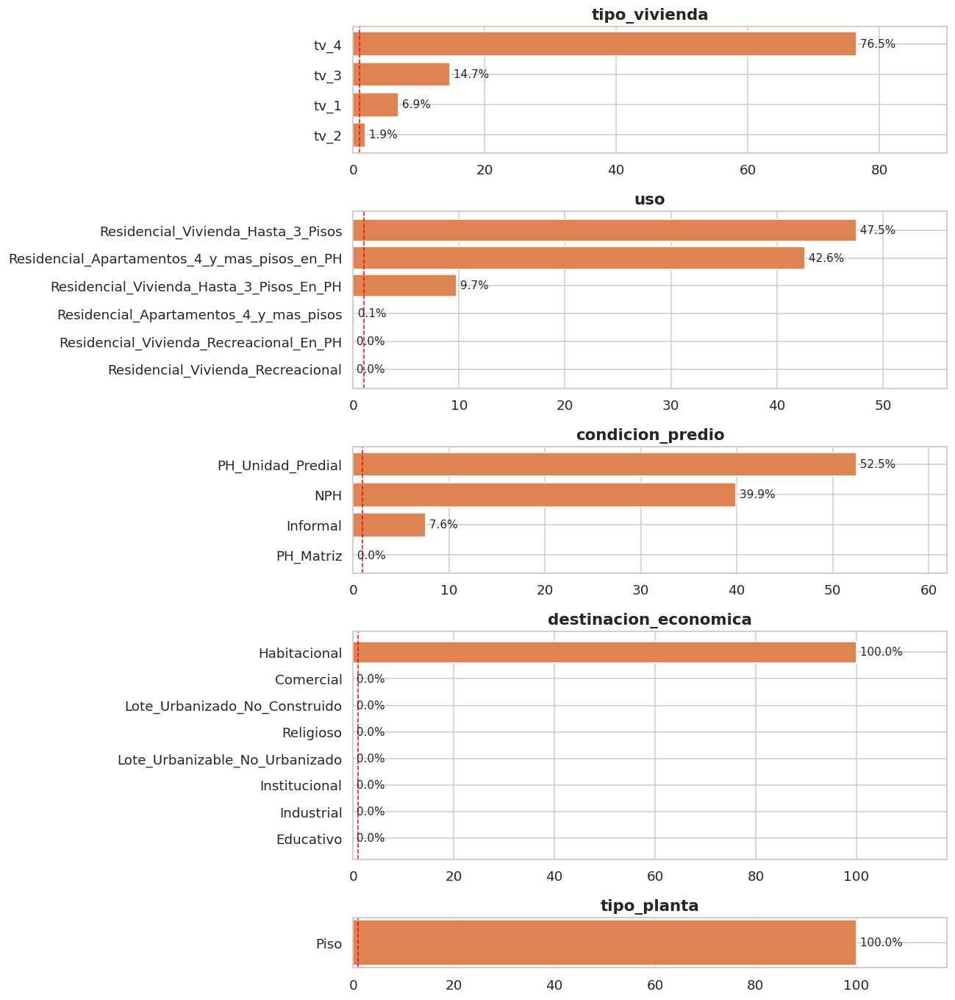

5. Análisis unidimensional (sección 2.2)#
Autores: María Carolina Cantillo Orozco (200179105) y Juan Camilo Oñoro Araujo (200177329)
Para cada variable: tipo y cardinalidad, estadísticos (media, mediana, desviación, percentiles), distribución, asimetría y curtosis, normalidad, outliers, y para las categóricas frecuencias, categorías raras y su tratamiento. Las lecturas de asimetría y curtosis siguen las tablas de las notas de clase (9.1.1):
|asimetría| |
lectura |
|curtosis| (Fisher) |
lectura |
|
|---|---|---|---|---|
< 0.5 |
aprox. simétrica |
< 0.5 |
similar a la normal |
|
0.5 – 1 |
moderadamente asimétrica |
0.5 – 1 |
moderada |
|
> 1 |
altamente asimétrica |
> 1 |
fuerte |
5.1 Tipo de variable y cardinalidad#
# Tabla de tipos: dtype real, tipo conceptual, número de valores distintos y
# porcentaje de nulos. La cardinalidad orienta el tratamiento (p. ej. conteos
# con pocos valores distintos se grafican como barras; categóricas con muchas
# categorías pueden requerir agrupar las raras antes del one-hot).
tipos = pd.DataFrame({
"dtype": [str(train[c].dtype) for c in nums + cats + C.ESPACIALES],
# Las coordenadas se separan como "numérica (espacial)" porque se analizan
# aparte (cap. 8) y su papel en el modelo es distinto al de las físicas.
"tipo": ["numérica"] * len(nums) + ["categórica"] * len(cats) + ["numérica (espacial)"] * len(C.ESPACIALES),
"valores distintos": [train[c].nunique() for c in nums + cats + C.ESPACIALES],
"% nulos": [100 * train[c].isna().mean() for c in nums + cats + C.ESPACIALES],
}, index=nums + cats + C.ESPACIALES)
tipos
| dtype | tipo | valores distintos | % nulos | |
|---|---|---|---|---|
| area_construida | float64 | numérica | 7489 | 0.000 |
| area_catastral_terreno | float64 | numérica | 20016 | 0.000 |
| total_habitaciones | float64 | numérica | 21 | 0.124 |
| total_banios | float64 | numérica | 16 | 0.013 |
| total_plantas | float64 | numérica | 16 | 0.000 |
| antiguedad | float64 | numérica | 76 | 0.059 |
| planta_ubicacion | float64 | numérica | 41 | 0.108 |
| altura | float64 | numérica | 5 | 0.000 |
| tipo_vivienda | object | categórica | 4 | 0.000 |
| uso | object | categórica | 6 | 0.000 |
| condicion_predio | object | categórica | 4 | 0.000 |
| destinacion_economica | object | categórica | 8 | 0.000 |
| tipo_planta | object | categórica | 1 | 0.000 |
| x_km | float64 | numérica (espacial) | 104906 | 0.000 |
| y_km | float64 | numérica (espacial) | 104906 | 0.000 |
| dist_centro_km | float64 | numérica (espacial) | 104908 | 0.000 |
5.2 Variables numéricas: estadísticos#
# Estadísticos descriptivos de las numéricas (físicas y espaciales).
# E.resumen_numerico calcula, sobre los valores no nulos, media, mediana,
# desviación, percentiles, IQR, asimetría y curtosis (Fisher: normal = 0),
# outliers por la regla de Tukey (fuera de Q1 − 1.5·IQR, Q3 + 1.5·IQR) y la
# lectura de asimetría y curtosis según las tablas de las notas de clase.
resumen = E.resumen_numerico(train, nums + C.ESPACIALES)
# Primera vista: posición y dispersión. Comparar media con mediana y p99 con
# max revela colas largas (la media se desplaza hacia la cola).
resumen[["n", "% nulos", "media", "mediana", "desv_est", "min", "p5", "p25", "p75", "p95", "p99", "max"]]
| n | % nulos | media | mediana | desv_est | min | p5 | p25 | p75 | p95 | p99 | max | |
|---|---|---|---|---|---|---|---|---|---|---|---|---|
| variable | ||||||||||||
| area_construida | 218870 | 0.000 | 96.452 | 76.000 | 71.265 | 10.000 | 38.000 | 54.000 | 115.000 | 221.000 | 372.000 | 1,971.000 |
| area_catastral_terreno | 218870 | 0.000 | 117.279 | 71.300 | 415.408 | 0.000 | 18.490 | 30.600 | 144.500 | 311.800 | 524.000 | 36,022.000 |
| total_habitaciones | 218599 | 0.124 | 2.889 | 3.000 | 1.081 | 0.000 | 2.000 | 2.000 | 3.000 | 4.000 | 6.000 | 20.000 |
| total_banios | 218842 | 0.013 | 1.620 | 1.000 | 0.885 | 0.000 | 1.000 | 1.000 | 2.000 | 3.000 | 5.000 | 15.000 |
| total_plantas | 218869 | 0.000 | 1.167 | 1.000 | 0.731 | 1.000 | 1.000 | 1.000 | 1.000 | 2.000 | 4.000 | 35.000 |
| antiguedad | 218741 | 0.059 | 19.031 | 16.000 | 14.174 | 0.000 | 3.000 | 8.000 | 28.000 | 40.000 | 74.000 | 94.000 |
| planta_ubicacion | 218633 | 0.108 | 2.864 | 1.000 | 3.165 | 1.000 | 1.000 | 1.000 | 4.000 | 10.000 | 14.000 | 41.000 |
| altura | 218870 | 0.000 | 2.994 | 3.000 | 0.115 | 1.000 | 3.000 | 3.000 | 3.000 | 3.000 | 3.000 | 9.000 |
| x_km | 218870 | 0.000 | -4.411 | -4.199 | 2.316 | -13.077 | -8.090 | -6.011 | -2.554 | -1.287 | -0.101 | 1.595 |
| y_km | 218870 | 0.000 | -0.895 | -0.801 | 3.496 | -7.743 | -6.275 | -4.044 | 2.371 | 4.250 | 5.300 | 6.788 |
| dist_centro_km | 218870 | 0.000 | 5.784 | 5.993 | 2.097 | 1.093 | 2.240 | 4.368 | 7.191 | 8.970 | 11.430 | 13.442 |
# Segunda vista: forma de la distribución. Asimetría y curtosis con su lectura
# (|asimetría| > 1 = altamente asimétrica) y el número y % de outliers de
# Tukey, que en distribuciones con cola larga suele ser alto sin que haya
# errores: la regla de Tukey supone aproximadamente simetría.
resumen[["asimetría", "lectura_asimetría", "curtosis", "lectura_curtosis", "outliers_Tukey", "% outliers"]]
| asimetría | lectura_asimetría | curtosis | lectura_curtosis | outliers_Tukey | % outliers | |
|---|---|---|---|---|---|---|
| variable | ||||||
| area_construida | 3.964 | altamente asimétrica | 34.096 | fuerte, leptocúrtica (colas pesadas) | 13073 | 5.973 |
| area_catastral_terreno | 51.673 | altamente asimétrica | 3,401.789 | fuerte, leptocúrtica (colas pesadas) | 10579 | 4.833 |
| total_habitaciones | 2.339 | altamente asimétrica | 17.817 | fuerte, leptocúrtica (colas pesadas) | 12238 | 5.598 |
| total_banios | 1.699 | altamente asimétrica | 7.648 | fuerte, leptocúrtica (colas pesadas) | 7320 | 3.345 |
| total_plantas | 10.181 | altamente asimétrica | 147.564 | fuerte, leptocúrtica (colas pesadas) | 24390 | 11.144 |
| antiguedad | 1.320 | altamente asimétrica | 2.913 | fuerte, leptocúrtica (colas pesadas) | 3018 | 1.380 |
| planta_ubicacion | 2.291 | altamente asimétrica | 6.739 | fuerte, leptocúrtica (colas pesadas) | 17447 | 7.980 |
| altura | -9.952 | altamente asimétrica | 496.062 | fuerte, leptocúrtica (colas pesadas) | 683 | 0.312 |
| x_km | -0.452 | aprox. simétrica | -0.180 | similar a la normal | 669 | 0.306 |
| y_km | -0.010 | aprox. simétrica | -1.283 | fuerte, platicúrtica | 0 | 0.000 |
| dist_centro_km | 0.129 | aprox. simétrica | 0.198 | similar a la normal | 2202 | 1.006 |
5.3 Distribuciones#
Histogramas en escala original y en escala log1p (las áreas y conteos
tienen colas largas: en escala original la mayor parte del histograma queda
aplastada contra el cero).

5.4 Normalidad#
Se aplican D’Agostino-Pearson y Shapiro-Wilk sobre submuestras de 5 000 (Shapiro no es fiable con más). Cautela: con n grande casi siempre se rechaza la normalidad aunque la desviación sea irrelevante; lo informativo es la forma (histogramas, asimetría y curtosis). La regresión logística no exige predictoras normales, pero las colas largas sí dan demasiado peso a pocos puntos, lo que motiva la transformación log.
# Pruebas de normalidad por variable sobre una submuestra aleatoria de 5 000
# filas (semilla fija para reproducibilidad). Se usan dos pruebas
# complementarias: D'Agostino-Pearson (K², basada en asimetría y curtosis) y
# Shapiro-Wilk (W, sensible a desviaciones en toda la distribución). El límite
# de 5 000 se debe a que el p-valor de Shapiro deja de ser exacto por encima
# de ese n (scipy lo advierte); además, con n enorme cualquier desviación
# mínima se vuelve "significativa", así que el resultado se lee con cautela.
E.pruebas_normalidad(train, nums, n=5000, seed=C.SEED)
| n_submuestra | D'Agostino K2 | p (K2) | Shapiro W | p (Shapiro) | ¿normal al 5%? | |
|---|---|---|---|---|---|---|
| variable | ||||||
| area_construida | 5000 | 4,177.717 | 0.000 | 0.714 | 0.000 | no |
| area_catastral_terreno | 5000 | 11,440.654 | 0.000 | 0.225 | 0.000 | no |
| total_habitaciones | 5000 | 3,138.721 | 0.000 | 0.771 | 0.000 | no |
| total_banios | 5000 | 2,844.810 | 0.000 | 0.758 | 0.000 | no |
| total_plantas | 5000 | 8,336.699 | 0.000 | 0.209 | 0.000 | no |
| antiguedad | 5000 | 1,120.054 | 0.000 | 0.883 | 0.000 | no |
| planta_ubicacion | 5000 | 2,382.740 | 0.000 | 0.666 | 0.000 | no |
| altura | 5000 | 8,481.294 | 0.000 | 0.035 | 0.000 | no |
5.5 ¿Hace falta transformar?#
Regla usada: se aplica log1p a las variables no negativas con
|asimetría| > 1 siempre que la transformación la reduzca.
# Aplicación de la regla de transformación: para cada numérica se compara la
# asimetría original con la asimetría tras log1p. La decisión es explícita y
# reproducible (no "a ojo"): solo se transforma si hay asimetría fuerte y el
# log efectivamente la reduce.
filas = []
for c in nums:
v = train[c].dropna()
sk0 = stats.skew(v) # asimetría muestral original
# log1p solo es válido si no hay negativos; si los hay, se deja en NaN y
# la variable queda automáticamente fuera de la transformación.
sk1 = stats.skew(np.log1p(v.clip(lower=0))) if v.min() >= 0 else np.nan
# Condiciones de la regla: no negativa, |asimetría| > 1 (altamente
# asimétrica según la tabla de clase) y |asimetría log1p| < |original|.
filas.append({"variable": c, "asimetría original": sk0, "asimetría log1p": sk1,
"aplicar log1p": bool(v.min() >= 0 and abs(sk0) > 1 and abs(sk1) < abs(sk0))})
transf = pd.DataFrame(filas).set_index("variable")
# Dos listas que usará el Pipeline del modelo: variables a transformar con
# log1p y variables que entran en escala lineal.
num_log = transf.index[transf["aplicar log1p"]].tolist()
num_lineal = [c for c in nums if c not in num_log]
transf
| asimetría original | asimetría log1p | aplicar log1p | |
|---|---|---|---|
| variable | |||
| area_construida | 3.964 | 0.417 | True |
| area_catastral_terreno | 51.673 | 0.317 | True |
| total_habitaciones | 2.339 | -0.672 | True |
| total_banios | 1.699 | 0.008 | True |
| total_plantas | 10.181 | 4.779 | True |
| antiguedad | 1.320 | -0.487 | True |
| planta_ubicacion | 2.291 | 1.142 | True |
| altura | -9.952 | -16.947 | False |
# Se registran las decisiones en decisiones_eda.json con su justificación.
# El notebook del modelo base lee este archivo, de modo que cada paso de
# preprocesamiento queda trazado al hallazgo del EDA que lo motivó.
C.guardar_decision("num_log", num_log, "Variables no negativas con |asimetría| > 1 que log1p reduce (cap. 5.5).")
C.guardar_decision("num_lineal", num_lineal, "Variables sin asimetría fuerte o que log1p no mejora (cap. 5.5).")
[decisión registrada] num_log = ['area_construida', 'area_catastral_terreno', 'total_habitaciones', 'total_banios', 'total_plantas', 'antiguedad', 'planta_ubicacion']
motivo: Variables no negativas con |asimetría| > 1 que log1p reduce (cap. 5.5).
[decisión registrada] num_lineal = ['altura']
motivo: Variables sin asimetría fuerte o que log1p no mejora (cap. 5.5).
5.6 Revisiones específicas#
¿Ceros estructurales en
area_catastral_terreno? Se esperaba que las unidades PH tuvieran terreno 0 (el lote es del edificio). Con los datos reales prácticamente no hay ceros (0.0 % de train en todas las condiciones de predio): las unidades PH también tienen área de terreno positiva. Lo más probable es que a cada unidad PH se le asigne su cuota del lote común (según el coeficiente de copropiedad), lo que encaja con la correlación de Spearman fuertemente negativa entre terreno y piso de ubicación (−0.695, cap. 6). Consecuencia práctica: no hace falta un indicador de «terreno = 0» ni tratar el cero aparte en la transformación log1p.Unidades de
altura: si la razón altura / número de plantas ronda 3, la altura está en metros (≈ 3 m por piso).
# Dos comprobaciones de coherencia con el dominio catastral:
# 1) ¿hay ceros estructurales en el terreno (esperables en unidades PH)?
# 2) ¿en qué unidades está la altura (metros o número de pisos)?
ceros = (train["area_catastral_terreno"] == 0) # máscara booleana de terreno 0
print(f"area_catastral_terreno = 0: {100 * ceros.mean():.1f}% de train")
# Tabla cruzada normalizada por fila: % de terreno 0 dentro de cada condición
# de predio (PH, NPH, informal). Si los ceros fueran estructurales, se
# concentrarían en las unidades PH.
print(pd.crosstab(train["condicion_predio"], ceros, normalize="index").mul(100).round(1)
.rename(columns={True: "% con terreno 0", False: "% con terreno > 0"}))
if "altura" in train:
# Razón altura / plantas; los 0 plantas se pasan a NaN para no dividir
# por cero. Se usa la mediana porque es robusta a registros extremos.
r = (train["altura"] / train["total_plantas"].replace(0, np.nan)).dropna()
print(f"\nMediana de altura / total_plantas = {r.median():.2f} (≈3 sugiere metros)")
area_catastral_terreno = 0: 0.0% de train
area_catastral_terreno % con terreno > 0 % con terreno 0
condicion_predio
Informal 100.000 0.000
NPH 100.000 0.000
PH_Matriz 100.000 0.000
PH_Unidad_Predial 100.000 0.000
Mediana de altura / total_plantas = 3.00 (≈3 sugiere metros)
Variables de conteo (valores discretos):

5.7 Variables categóricas#
# Tabla de frecuencias de cada categórica. E.resumen_categorico cuenta cada
# categoría (incluidos los nulos), su % y marca como "rara" la que tiene < 1 %
# de train. Las categorías raras aportan coeficientes inestables en la
# logística (pocas observaciones) y pueden no aparecer en algún fold.
for c in cats:
t = E.resumen_categorico(train, c)
print(f"\n=== {c} === ({len(t)} categorías, {int(t['rara (<1%)'].sum())} raras)")
print(t.head(15).to_string(float_format=lambda v: f"{v:,.2f}")) # 15 más frecuentes
=== tipo_vivienda === (4 categorías, 0 raras)
frecuencia % rara (<1%)
tipo_vivienda
tv_4 167404 76.49 False
tv_3 32179 14.70 False
tv_1 15110 6.90 False
tv_2 4177 1.91 False
=== uso === (6 categorías, 3 raras)
frecuencia % rara (<1%)
uso
Residencial_Vivienda_Hasta_3_Pisos 103961 47.50 False
Residencial_Apartamentos_4_y_mas_pisos_en_PH 93342 42.65 False
Residencial_Vivienda_Hasta_3_Pisos_En_PH 21312 9.74 False
Residencial_Apartamentos_4_y_mas_pisos 246 0.11 True
Residencial_Vivienda_Recreacional_En_PH 8 0.00 True
Residencial_Vivienda_Recreacional 1 0.00 True
=== condicion_predio === (4 categorías, 1 raras)
frecuencia % rara (<1%)
condicion_predio
PH_Unidad_Predial 114816 52.46 False
NPH 87401 39.93 False
Informal 16591 7.58 False
PH_Matriz 62 0.03 True
=== destinacion_economica === (8 categorías, 7 raras)
frecuencia % rara (<1%)
destinacion_economica
Habitacional 218841 99.99 False
Comercial 17 0.01 True
Lote_Urbanizado_No_Construido 3 0.00 True
Religioso 3 0.00 True
Lote_Urbanizable_No_Urbanizado 2 0.00 True
Institucional 2 0.00 True
Industrial 1 0.00 True
Educativo 1 0.00 True
=== tipo_planta === (1 categorías, 0 raras)
frecuencia % rara (<1%)
tipo_planta
Piso 218870 100.00 False

Categorías raras, degeneradas y redundantes
tipo_vivienda(códigos del dominio oficial de ArcGIS): 76.5 % estv_4(«No Aplica»), 14.7 %tv_3(«No VIS»), 6.9 %tv_1(VIS) y 1.9 %tv_2(VIP). Que tres de cada cuatro unidades sean «No Aplica» indica que la clasificación VIS/VIP solo se registra para una parte del parque (probablemente vivienda nueva de proyectos). Ninguna categoría es rara.uso: tres categorías concentran el 99.9 % (vivienda hasta 3 pisos 47.5 %, apartamentos de 4 y más pisos en PH 42.6 %, vivienda hasta 3 pisos en PH 9.7 %); las otras tres (apartamentos sin PH, vivienda recreacional con y sin PH) suman 255 filas y se agrupan comoinfrequent.condicion_predio: PH unidad predial 52.5 %, NPH 39.9 %, Informal 7.6 %;PH_Matriz(62 filas) es rara y se agrupa.Variables degeneradas:
destinacion_economicaes «Habitacional» en el 99.99 % de train (29 filas en otras 7 categorías) ytipo_plantaes constante («Piso» en el 100 %; las otras 2 categorías del crudo desaparecen con las exclusiones del embudo del cap. 1, que saca garajes y depósitos). Ninguna de las dos puede discriminar el estrato: en el cap. 6destinacion_economicatiene V de Cramér = 0 (p = 0.47) ytipo_planta, por ser constante, ni siquiera entra en la prueba. Ambas se excluyen del modelo (cap. 9).Decisión: agrupar las categorías con < 1 % (línea roja) en una categoría
infrequentconOneHotEncoder(min_frequency=0.01), que calcula las frecuencias solo en train.Posible redundancia:
uso(»…en_PH») ycondicion_prediocodifican ambos el régimen de propiedad horizontal. Su asociación se mide en el cap. 6.
# Se registra el umbral de frecuencia mínima para el OneHotEncoder del modelo.
# Al estar dentro del Pipeline, las frecuencias se recalculan en cada fold de
# entrenamiento, así que el agrupamiento de categorías raras no filtra
# información de validación ni de test.
C.guardar_decision("onehot_min_frecuencia", 0.01,
"Categorías con < 1 % en train se agrupan en 'infrequent' (cap. 5.7).")
[decisión registrada] onehot_min_frecuencia = 0.01
motivo: Categorías con < 1 % en train se agrupan en 'infrequent' (cap. 5.7).
5.8 Resumen#
Interpretación
Todas las variables físicas son altamente asimétricas según la tabla del profesor Lihki (|asimetría| > 1) y leptocúrticas. Las más extremas son el terreno (asimetría 51.7, curtosis 3 402) y el número de plantas (10.2; 148); el área construida queda en 4.0 (curtosis 34). La unidad típica tiene 76 m² construidos, 3 habitaciones y 1 baño, pero la cola llega a 1 971 m² construidos y a 36 022 m² de terreno. Los máximos de habitaciones (20), baños (15) y área construida quedan dentro de los umbrales con que el cap. 1 excluye los «registros agregados» (edificios enteros en una fila), y el piso máximo (41) dentro del techo de 60.
log1pcorrige casi por completo la asimetría de área construida (4.0 → 0.42), terreno (51.7 → 0.32), baños (1.7 → 0.01) y antigüedad (1.3 → −0.49); en habitaciones (2.3 → −0.67) la sobrecorrige y la deja moderada hacia la izquierda; en plantas (10.2 → 4.8) y piso (2.3 → 1.1) la mejora es parcial porque son conteos con mucho peso en 1. Decisión:log1pen 7 variables;alturaqueda lineal (log1p empeora su asimetría: −10.0 → −16.9).alturaes casi constante: vale 3 (metros por planta) en el 99.7 % de las filas (su IQR es 0, así que sus 683 outliers de Tukey son exactamente los valores distintos de 3). Aportará muy poco (cap. 6: η² = 0.005).Las pruebas de normalidad rechazan en todas (esperable con n grande); no es un problema para la regresión logística, que no supone normalidad de las predictoras. La transformación busca reducir la influencia de las colas, no «normalizar».
Las coordenadas (
x_km,y_km,dist_centro_km) son aproximadamente simétricas;y_kmes platicúrtica (la ciudad está repartida de forma bastante uniforme a lo largo del eje norte-sur).Categóricas: pocas categorías dominantes, varias raras que se agrupan, y dos variables degeneradas (
destinacion_economica,tipo_planta).